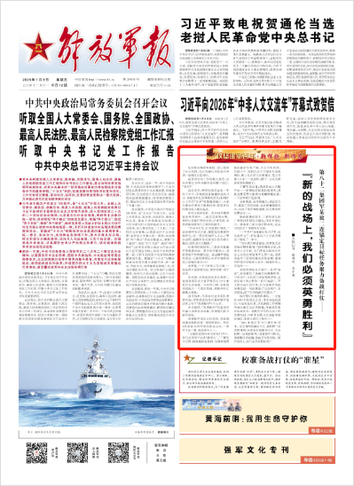

第八十二集团军某旅二连锚定目标任务聚力备战打仗——
“新的战场上，我们必须英勇胜利”
■解放军报记者 张科进 宋子洵
见到第82集团军某旅二连三级军士长王恕时，他正在连队兵棋室内导调一场班组红蓝对抗。
谈及对去年工作的最大感受，这名有着近20年兵龄的老兵脱口而出：“充实！”
这份充实，鲜明体现在过去一年的工作中：为使新装备加速形成战斗力，该连官兵扎在训练场攻关；影响中心工作的“五多”现象越来越少，大家从繁杂的事务中解脱出来，将更多时间精力投入练兵备战。
有付出就有收获。在2025年建制连年终考核中，二连官兵拔得头筹。视野从该连扩展到全旅，记者发现，该旅训练成绩相比之前明显提升。
“当兵为打仗，打仗就要打胜仗。”该旅领导告诉记者，随着政治整训持续深化，这一观念更加深入人心，“事实证明，越整训官兵备战打仗的劲头越足，部队战斗力越强。”
红蓝对抗刚结束，二连官兵就地开展复盘总结。窗外的训练场上，某新型装甲车疾驰而过。透过履带卷起的烟尘，记者仿佛看见90多年前那场惊心动魄的战斗——
直罗镇，一个三面环山的小镇，一条东西大道穿镇而过，地形险要，利于设伏。
在这里，毛泽东同志亲自指挥二连前身部队攻占直罗镇西北7.5公里处的无名高地。不到半小时，官兵就突破敌人一个营的防线，将胜利的红旗插上高地。
战斗结束，毛泽东对这支部队赞赏有加，并欣然在指导员杨树根的笔记本上写下“英勇胜利”4个大字。
岁月流转，“英勇胜利”的基因早已融入该连官兵血脉，引领他们奔向新的战场。
受领陆军某试点任务后，该连挑选精兵强将走进厂家跟研跟训。历经4代装备16种车型的坦克尖兵、一级军士长丁辉，就是其中之一。
“上级把这项任务交到我们手中，我们必须啃下这块‘硬骨头’。”丁辉至今记得，刚接触新装备时，他看着驾驶舱内崭新的电子屏，有点不知所措。那段日子，他和战友白天铆在车场练操作，晚上扎在学习室啃理论，笔记写满3大本……就这样，他们一点点把新装备性能摸透了。
丁辉告诉记者，挑战首先从头脑开始——新型战车信息化程度高，驾驶员要花费大量精力处理数据信息，一不留神就可能误判。
这种挑战，是持续叠加、动态变化的：掌握了原有技能，还有新难题要攻关；适应了原有难度强度，还有更高标准要追求……
跟研跟训过程中，丁辉和战友向厂家提出多项优化建议，得到专家认可。新装备上的主动防护系统，就是他们配合厂家研发打造的。
“一年半！”该连连长告诉记者，在官兵努力下，新装备战斗力生成周期至少缩短了一年半。
“官兵倾力研战谋战，党委机关必须做好服务保障。”该旅领导介绍，为优化人才队伍，他们优先分配相关专业士兵及定向培养军士到二连，选派该连骨干到院校接受系统培训，邀请科研院所专家深入演训一线进行嵌入式指导……
该旅党委机关所做的一系列“加法”，有效激发了该连官兵训练热情。可采访中，官兵同记者谈得最多的，是旅党委下决心做的一系列“减法”。军士柳思昌告诉记者，如今旅领导常挂在嘴边的一句话就是：“长会短开、长话短说，留下时间给部队抓落实。”
政治整训吹来阵阵新风。一名连长2025年初受处分后，并没有就此消沉，而是知耻后勇，以饱满的工作热情带领全连官兵刻苦训练，年底连队获评先进单位。该旅作训科科长因工作实绩突出，2025年初提升至旅副参谋长岗位，年底又荣立三等功……
“2026年是红军长征胜利90周年。纪念胜利的最好方式，是取得一场场新胜利；告慰先烈的最好方式，也是取得一场场新胜利。”迎着新年的阳光，望着飘扬的连旗，该连王指导员说，“新的战场上，我们必须英勇胜利！”
